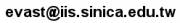
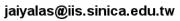

2014「邏輯、語言與計算」暑期研習營 (FLOLAC ’14)
最新動態
- [2014/07/14] 全課程錄影上網。感謝 miaoski & yllan 大力協助！
- [2014/07/04] 請所有參加者（含修課學生、旁聽生）儘速上網填寫 FLOLAC '14 第一週教學回饋問卷 http://goo.gl/BEoGaN
- [2014/07/04] 修課學生填寫證書寄送資料調查網址 http://goo.gl/b7lalJ （旁聽生不需填寫）
- [2014/06/28] 提醒大家，上課地點在台大新生教學大樓 202 教室，從羅斯福路與新生南路交叉口處校門進入，沿椰林大道走到底左轉小椰林道，位於第二個路口的左前方喔！
- [2014/06/04] 旁聽名單正式額滿囉！來不及報名的各位朋友還是可以來信候補，我們將於 6/25 前通知候補情況！另外，7/1（唐鳳）及 7/10（陳恭）的邀請演講不在人數限制中，有意旁聽者自行填寫邀請演講報名表格即可！（已修課／報名旁聽成功者不需填寫）
- [2014/06/02] 因場地及實習制度限制，旁聽人數即將額滿，報名請從速喔！
- [2014/05/19] 旁聽名單(即時更新)！
- [2014/05/10] 海報檔出來囉！poster.png
- [2014/05/02] 我們的正式課名和課號都出來囉！有興趣修課的台大學生們快幫忙上台大暑期課程網登記吧！
- [2014/04/25] Invited Talks 的講者也出爐囉！
- [2014/04/18] 住宿資訊更新，Operational Semantics 和 Special Lecture 的講者也出爐囉！
宗旨
「邏輯、語言與計算」暑期研習營希望培養學員獨立進行基礎計算科學研究之能力。從第二年起，本研習營在兩大主題 — 程式語言與型式驗證之間輪替。今年（偶數年）之主題為程式語言，正式學分班課程名稱為「程式語言理論與型態系統」。
本課程將講授程式語言與型式驗證領域之入門理論與知識，包含邏輯、λ calculus、函數編程 (functional programming)、型別 (types) 、語意 (semantics)、領域特定語言 (domain-specific languages) 等等，希望培養學生以型式邏輯進行清晰思考的能力，了解邏輯與程式語言、型別系統的密切關係，以及型別系統在程式語言中扮演的角色，使學生能以歸納、遞迴方式理解並解決程式設計問題，能運用軟體工具輔助邏輯推理並證明程式之正確性，並具備在程式語言相關領域進行研究的能力。
自 2012 年起，本研習營正式成為台灣大學暑修課程，針對大學部學生開課，但亦歡迎研究生選修。台灣大學學生可透過國立台灣大學暑期課程網選課，有學籍之其他學校學生可透過校際選修選課。無學籍之社會人士也可旁聽。詳見報名資訊頁。
「邏輯、語言與計算」暑期研習營曾在 2007、2008、2009、2010、2011、2012、2013 年舉辦，今年為第八屆。
時間地點
- 日期：2014 年 6 月 30 日 (週一) 至 7 月 11 日 (週五)，共計十天。
- 時間：每週一至週五早上九點十分至下午四點二十分。
- 地點：國立臺灣大學新生教學大樓 202 教室，從羅斯福路新生南路交叉口處校門進入，沿椰林大道走到底左轉小椰林道，位於第二個路口的左前方。
課程與講者
本次 FLOLAC 全面引進「實習制」，課中將留大段時間讓學生手寫或上機練習，並有助教群隨時協助解決問題。
課表
| 06/30 | 07/01 | 07/02 | 07/03 | 07/04 | 07/07 | 07/08 | 07/09 | 07/10 | 07/11 | ||
|---|---|---|---|---|---|---|---|---|---|---|---|
| 09:10 – 12:10 | FP | TT | DTP | DTP | DTP | DeS | DeS | SL | SL | Exam | |
| 12:20 – 13:10 | Lunch | ||||||||||
| 13:20 – 16:20 | FP | Talk I | TT | TT | TT | OpS | OpS | OpS | Talk II | ||
報名方法與時間
本課程於台灣大學暑期第一梯次開授，為三學分之選修課，正式課號與課名為：「725 U3500 程式語言理論與型態系統」。
- 台大在校學生
- 請至國立台灣大學暑期課程網選課。
- 網路選課: 2014 年 6 月 12 日 至 6 月 13 日。
- 人工加退選: 2014 年 6 月 19 日 至 6 月 20 日。
- 非台大學生
- 可至國立台灣大學暑期課程網辦理「外校學生上網報名」。
- 網路選課: 2014 年 6 月 4 日 至 6 月 5 日。
- 需於 2014 年 6 月 12 日 至台大教務處繳交申請書。
- 因場地及實習制度限制，修課人數上限40人（含非台大學生），敬請把握時間，於時程內提早選課。
- 台大及非台大學生若錯過選課時程，仍可來信報名旁聽，請於 06/25 前來信至
 。
。 - 無學籍之社會人士若欲報名參加，請於 06/25 前來信至；
- 因場地及實習制度限制，旁聽人數上限50人（獨立於修課人數），報名從速；旁聽名單將即時更新於本站。
- 7/1（唐鳳）及 7/10（陳恭）的邀請演講不在人數限制中，有意旁聽者請自行填寫邀請演講報名表格。（已修課／報名旁聽成功者不需填寫）
- 旁聽不保證提供講義，可自行上網下載講義電子檔。
報名資格、費用、其他注意事項等詳細資訊詳見報名資訊頁。
住宿資訊
- 請填寫住宿調查表格，並自行聯絡其他需要住宿的參加者聯絡共同租房手續。
- 主辦單位亦可代為聯絡協調住房事宜，如需協助，請email
 。
。
主辦單位
課程委員
課務統籌
- 張少娟 Chang, Shao-Chuan 中央研究院資訊科學研究所
- 王柔心 Stephanie Wang .
助教資訊
- 郗昀彥 Yun-Yan Chi 
- 蘇健元 Geoffr Su


{kind=link}